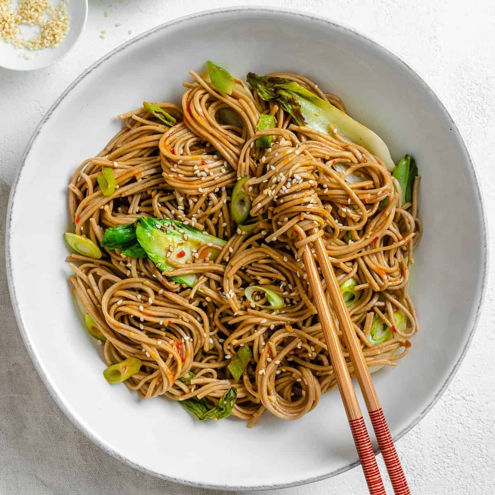

How to make Sesame Soba Noodles

Description
Soba means “buckwheat” in Japanese. The noodles are made with buckwheat flour and likely with wheat flour added. Though difficult to source in the U.S. some are made with 100% buckwheat flour-they'll be labeled juwari soba which makes them gluten-free. Soba noodles have a robust toasty, nutty flavor, and soft, chewy, and elastic texture.
Ingredients
- For the noodles
- 9 ounces dry soba noodles (see Recipe Note)
- 1/4 cup toasted sesame oil
- 3 tablespoons soy sauce
- 2 tablespoons maple syrup or sugar
- 2 tablespoons fresh lemon juice or rice vinegar
- 2 tablespoons toasted sesame seeds (black or white)
- 2 green onions, roots trimmed and finely chopped
- 1 clove garlic, grated with a Microplane
- 1/4 teaspoon freshly ground black pepper
- Optional topping
- Thinly sliced radishes
- Any type of micro greens
- Chopped cilantro
Steps
- Did
- you
- really
- thought
- I
- was
- to
- list
- every
- single
- step?